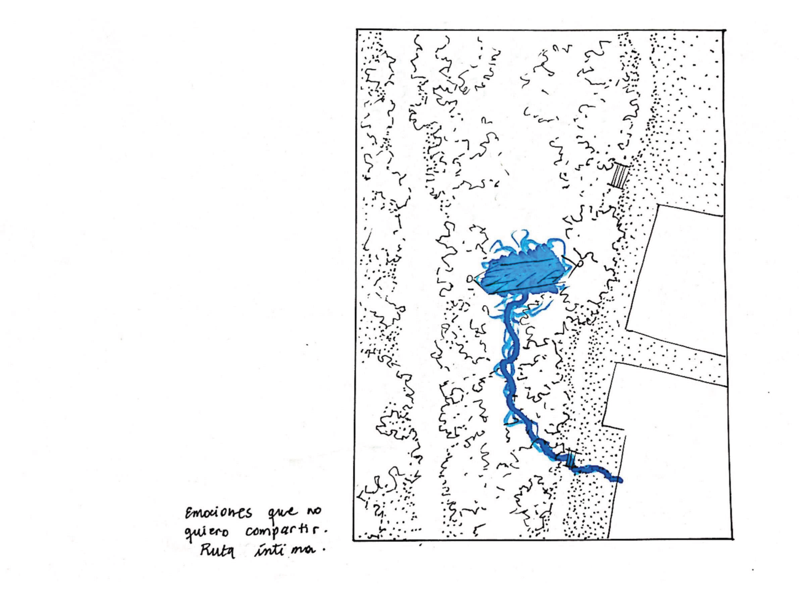
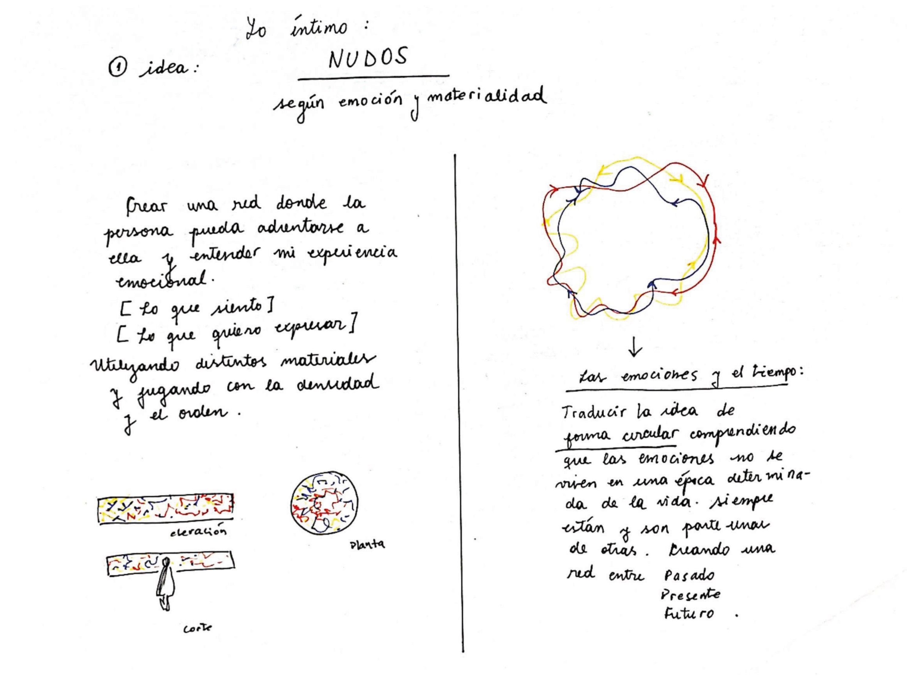

Mi espacio físico es: una hamaca y muchos árboles. Mi espacio emocional;
la conexión heredada por las mujeres de mi familia. Mi abuela, mi bisabuela y mi madre,
mujeres llenas de nudos simbólicos y tangibles.
Una hamaca, tejida, urdida, liviana y con la capacidad de resistir.


2. LA FORMA
Experimentación material y formas de inundar el vacío con nudos
3. EL PROYECTO
A través de nudos infinitos armo un manto que se apodera del espacio,
se estira,
enreda y envuelve como traducción de la contradictoria emoción.
Este es el proyecto que más me hace sentido siendo estudiante,
es un abstracción emocional que crea un concepto y el concepto un proyecto que tiene sentido y memoria,
sin precisiones, sin objetivo, sólo experimentación y catarsis.
Para despedirme, te comparto una canción que me ayuda a desanudar los nudos aún cuando todo está en la pregunta.